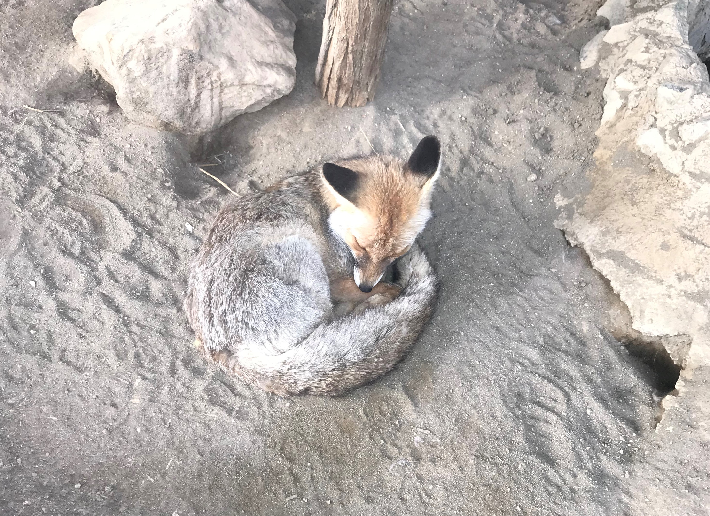
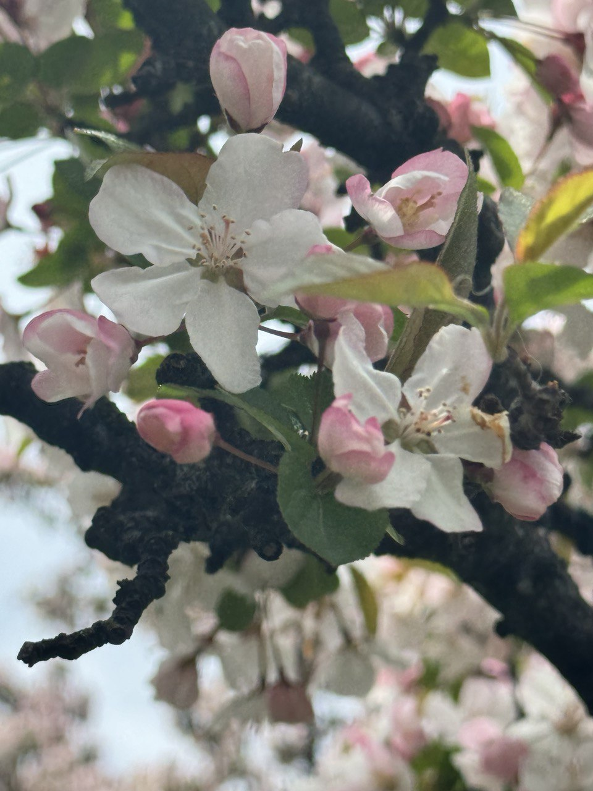
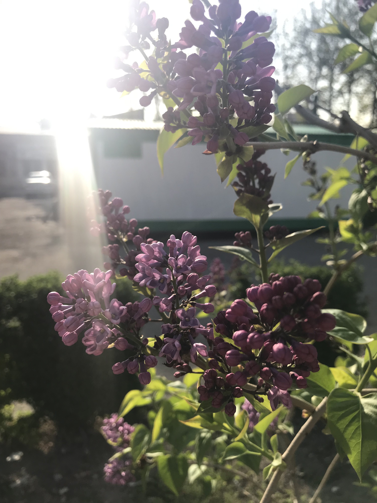

Some Shots by Me!
I love to share my photographs with people and hear their comments. Here are some pictures I've taken.

What does the fox say?

Mysterious chameleon

Super exhausted chameleon

Me and the sunset
Guess the backstory of this smile
Me at the beach
New Years Eve with my friend at Times Square
Flowers
More flowers

More flowers

More flowers